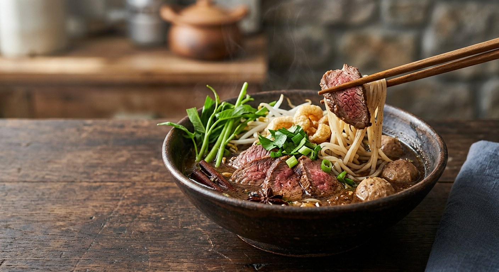

The noodle soup named after a waterfall of blood — a fermented tofu broth dark enough to stain the bowl, fresh blood stirred in at the table, and meat sliced so thin it cooks in the pour.

ก๋วยเตี๋ยวน้ำตก translates as "waterfall noodles" and the name is literal, not poetic. BrandThink traces it to the boat-noodle era: with no space aboard the boat, sellers kept their fresh meat on ice with a ชามรองเลือด — a catch bowl — underneath to collect the blood mixed with meltwater. The blood that fell (ตก) into the bowl went into the broth, and the dish kept the name. Today the waterfall is deliberate: raw blood is stirred into the bowl or the pot at service, and it is what makes nam tok darker, silkier and deeper than its cousin, the regular boat noodle.
Kapook gives the boat itself a story too. Noodles were already sold from boats when, in the era of Field Marshal Plaek Phibunsongkhram, a great flood hit Bangkok — so a noodle seller was rowed into Government House to feed a meeting of ministers. The government liked the economics as much as the broth, and promoted boat-noodle selling as a way to earn income during the recession. Nam tok is the boat noodle pushed further: the same fermented tofu (เต้าหู้ยี้) and toasted spice bag, with blood in the broth and a bowl assembled one ladle at a time.
Wongnai's home recipe builds the broth from beef bones, cinnamon, star anise, sichuan pepper (พริกหอม), coriander seed and cumin, softened with coconut milk and sweetened with dark soy and pickled garlic water. The selling batches at TrueID and Aroifin scale the same idea for 150–200 bowls, dry-toasting the spices first and bundling them with coriander root and galangal. Pork and beef versions are equally classic — Kapook's shop roundup lists both at almost every counter — but the blood, the tofu and the spice bag are non-negotiable in all of them.
| Thai | English | Amount |
|---|---|---|
| กระดูกวัว | Beef bones | ½ kg |
| อบเชย | Cinnamon sticks | 4 |
| โป๊ยกั๊ก | Star anise | 10 |
| พริกหอม (ชวงเจีย) | Sichuan pepper | 2 tbsp |
| ลูกผักชี | Coriander seeds | 3 tbsp |
| ยี่หร่า | Cumin | 1 tbsp |
| ซอสปรุงรส | Seasoning sauce | 5 tbsp |
| กะทิ | Coconut milk | 100 ml |
| ซีอิ๊วดำ | Dark soy sauce | 5 tbsp |
| เต้าหู้ยี้พร้อมน้ำ | Fermented tofu, with its liquid | 7 cubes |
| น้ำกระเทียมดอง | Pickled garlic water | 1 cup |
| ใบเตย | Pandan leaves | 7 |
| เลือดสด | Fresh blood (beef or pork) | 1 ladle per bowl |
| เส้นเล็ก | Thin rice noodles | per bowl |
| ลูกชิ้น | Meatballs | per bowl |
| ถั่วงอก | Bean sprouts | per bowl |
| ผักบุ้ง | Morning glory | per bowl |
| เนื้อวัวสไลซ์ | Beef rump, sliced thin | per bowl |
| กระเทียมเจียว | Fried garlic | to finish |
The selling batch (TrueID, for a 10-litre pot, 30–40 bowls): 7 L water, 1 kg pork spine bones, 1 kg liver stalk for the braised pork, 500 g–1 kg pork loin, 500 g–1 kg liver, 500 g meatballs, 700 g fresh pig's blood; 25 g cinnamon, 3 g coriander seed, 10 g star anise, 5 g sichuan pepper, 30 g coriander root, 50 g garlic, 90 g galangal, 100 g pandan — dry-toasted and bundled in cheesecloth — plus 5 g five-spice powder, 10 g white pepper, 75 g fermented tofu paste, 25 g tofu liquid, 75 g oyster sauce, 25 g seasoning sauce, 25 g light soy, 35 g sweet dark soy, 25 g salt, 100 g palm sugar, 45 g rock sugar and 100 g shallots. Aroifin's tip: keep the spices in the bundle so nothing clouds the broth, and stir the coconut milk in only at the very end. At the table: fried garlic, pork crackling, roasted chilli powder, and the nam tok condiment tray — pickled chilli vinegar, sugar, chilli powder, vinegar (Ajinomoto).
Blood in the pot or only in the bowl. TrueID's selling batch stirs a little fresh blood into the pot mid-simmer and keeps the rest for per-bowl ladling. Wongnai and Aroifin put all of it in the bowl (or the ladle) at service, never in the pot. The per-bowl pour gives you that silky, just-set texture; the pot method seasons the whole batch.
Coconut milk. Wongnai adds 100 ml of coconut milk to the home broth and Aroifin stirs it in at the end of a selling batch. TrueID's 28-litre pot has none at all. All three keep it modest — this is a spiced, savoury broth, not a kathi curry.
Cumin or five-spice. The beef recipes (Wongnai, and the Cookpad home cook) add cumin to the spice bag. The pork selling batches (TrueID, Aroifin) swap it for ผงพะโล้, five-spice powder, over the cinnamon, star anise and sichuan pepper they all share.
Beef or pork. Wongnai and Cookpad are beef; TrueID, Aroifin and Ajinomoto are pork. Kapook's shop roundup treats both as standard on the same menu — the name belongs to the broth, not the animal.
The sweet. TrueID and Aroifin sweeten with palm sugar plus rock sugar. Wongnai's home pot lists no sugar at all — the sweetness comes from the sweet dark soy and the pickled garlic water.
This recipe is translated from the following Thai-language sources. Where they disagree, we've said so.
1. Wongnai — "แจกสูตรฟรี 'ก๋วยเตี๋ยวน้ำตกเนื้อวัวสไลซ์' เนื้อเด้งสู้ดิ้น ซุปเข้มข้น!" (the recipe used here) — wongnai.com
2. TrueID Food — "แจกสูตรก๋วยเตี๋ยวเรือ ก๋วยเตี๋ยวหมูน้ำตก หมูตุ๋น สูตรอร่อย ทำขายปังๆ" (the selling batch) — food.trueid.net
3. Aroifin — "วิธีทำ ก๋วยเตี๋ยวเรือ ก๋วยเตี๋ยวน้ำตก สูตรทำขาย อร่อยไม่ต้องปรุง!" by เชฟเจิน อนัญญา ภัทรลาภ (the second selling batch) — aroifin.com
4. Kapook Cooking — "ก๋วยเตี๋ยวเรือร้านดัง 2025 ห้ามพลาด พร้อมแจกสูตรก๋วยเตี๋ยวเรือหมูน้ำตกฟรี" (the boat-noodle history and the shop guide) — cooking.kapook.com
5. Ajinomoto TH — "วิธีทำและสูตรก๋วยเตี๋ยวน้ำตก รสเด็ด" (the simplified home version and condiment tray) — recipe.ajinomoto.co.th
6. BrandThink — "น้ำตกใน 'ก๋วยเตี๋ยวน้ำตก' และ 'ลาบน้ำตก' มีที่มาจากอะไร" (the origin of the name) — brandthink.me
7. Cookpad — "สูตรก๋วยเตี๋ยวน้ำตกเนื้อ" by ท่านหนึ่งง (the home beef pot with offal and fresh blood) — cookpad.com